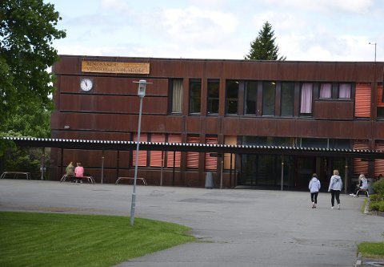
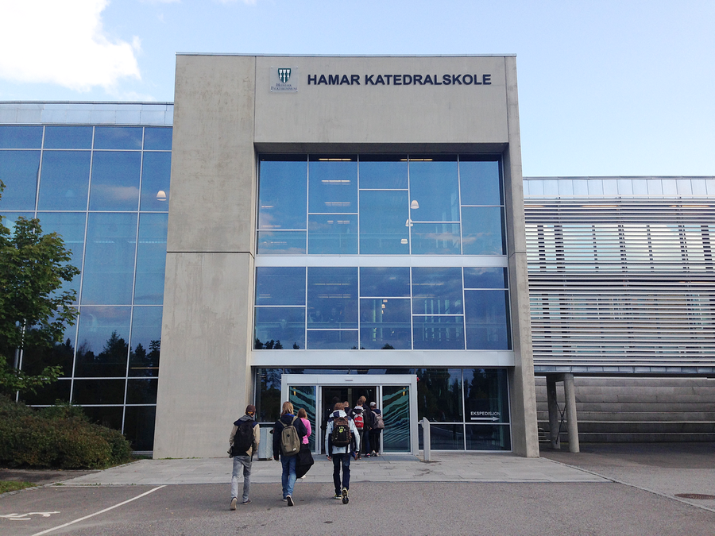

Utdanning
Gikk som de fleste gjennom vanlig grunnskole, ved Stavsberg Barneskole og Furnes Ungdomskole, og valgte etter jeg hadde fullført det å gå i en yrkesfalig retning. Her søkte jeg meg inn på Ringsaker Videregående Skole i Brumunddal ved deres elektrofag linje. Etter et års tid der fant jeg ut at jeg ville gå i en annen retning enn elektriker eller automasjon og søkte meg i retning data og elektronikk for andre året ved Hamar Katedralskole. Deretter gikk jeg videre på datalektronikkerfaget sitt tredje år og hadde deretter et valg om å ta påbygg eller gå ut som lærling, jeg valgte det senere.
 